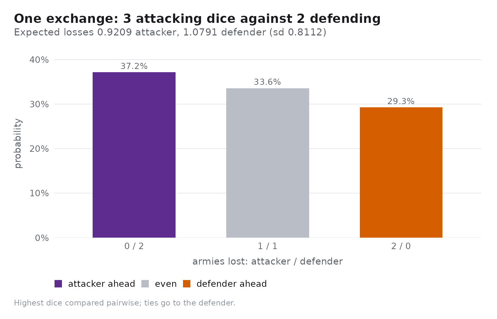
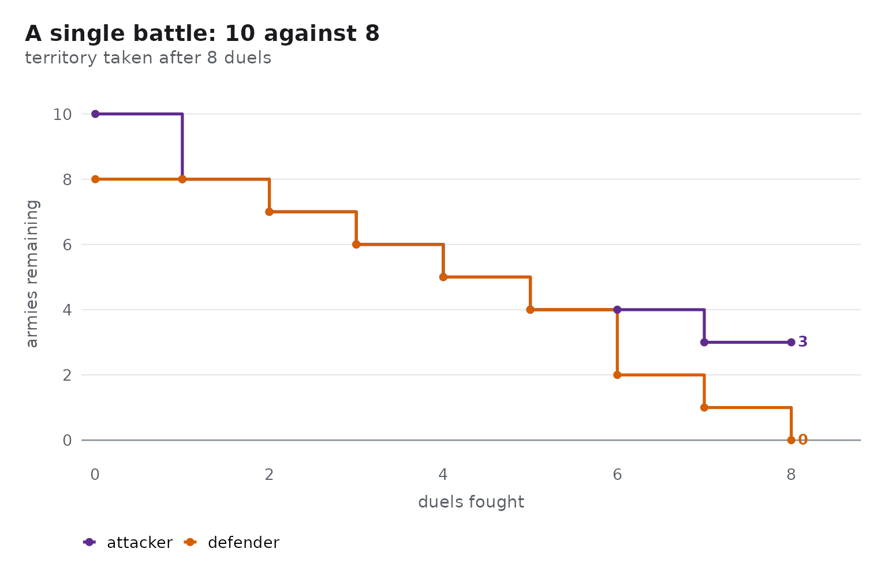
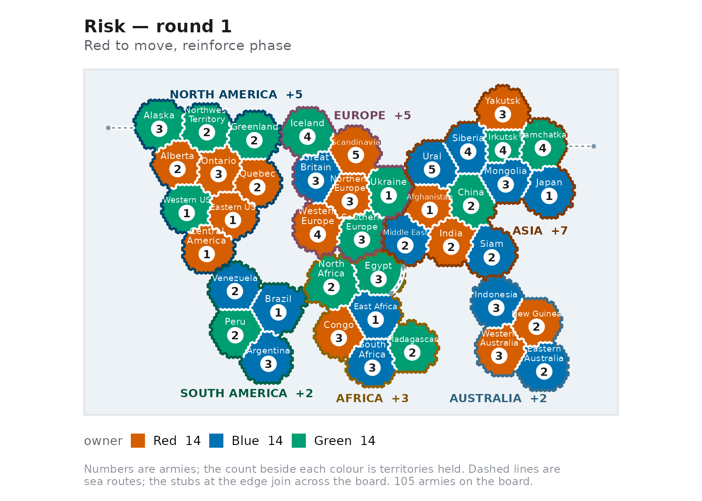

risikoR has four layers, each usable on its own:
- the combat engine —
rk_duel(),rk_duel_dist(),rk_duel_odds(); - the battle simulator —
rk_battle(),rk_battle_odds(),rk_odds_table(); - the game model —
rk_game()plus the turn cycle and the AI agents; - the plot layer —
rk_plot_map()and friends, all returning ggplot objects.
The dice duel
The heart of Risk is a dice duel. The attacker rolls up to three dice, the defender up to two, and the highest dice are compared pairwise. The attacker must roll strictly higher: ties go to the defender.
set.seed(1)
rk_duel(3, 2)
#> $att_loss
#> [1] 2
#>
#> $def_loss
#> [1] 0
#>
#> $att_roll
#> [1] 4 1 1
#>
#> $def_roll
#> [1] 5 2rk_duel_dist() enumerates all
6^3 * 6^2 = 7776 equally likely combinations, so the
probabilities are exact rather than simulated:
rk_duel_dist(3, 2)
#> # A tibble: 3 × 5
#> n_att n_def att_loss def_loss p
#> <int> <int> <int> <int> <dbl>
#> 1 3 2 0 2 0.372
#> 2 3 2 1 1 0.336
#> 3 3 2 2 0 0.293rk_duel_odds() summarises the same enumeration:
rk_duel_odds(3, 2)
#> # A tibble: 1 × 8
#> n_att n_def e_att_loss e_def_loss sd_loss p_att_wins_all p_def_wins_all
#> <int> <int> <dbl> <dbl> <dbl> <dbl> <dbl>
#> 1 3 2 0.921 1.08 0.811 0.372 0.293
#> # ℹ 1 more variable: p_split <dbl>The attacker expects to lose 0.92 armies and the defender 1.08 per three-on-two duel — the standard textbook values.
rk_plot_duel(3, 2)
A full battle
rk_battle() keeps rolling until the attacker runs out of
spare armies or the defender is wiped out.
set.seed(1)
battle <- rk_battle(10, 8)
battle
#> <rk_battle> territory conquered after 8 duels
#> Attacker: 3 left · Defender: 0 leftEvery battle carries its own log, which autoplot() turns
into a picture of the fight:
ggplot2::autoplot(battle)
Conquest probability
rk_battle_odds() answers the question that actually
matters at the table: will this attack succeed? The "exact"
method solves the underlying Markov chain, so no simulation error is
involved; "mc" simulates instead.
rk_battle_odds(20, 15, method = "exact")
#> # A tibble: 1 × 7
#> att_armies def_armies method n p_conquer e_att_survivors e_def_survivors
#> <int> <int> <chr> <int> <dbl> <dbl> <dbl>
#> 1 20 15 exact NA 0.822 7.83 0.719
set.seed(1)
rk_battle_odds(20, 15, n = 1000)
#> # A tibble: 1 × 7
#> att_armies def_armies method n p_conquer e_att_survivors e_def_survivors
#> <int> <int> <chr> <int> <dbl> <dbl> <dbl>
#> 1 20 15 mc 1000 0.827 8.02 0.682Ten attackers beat five defenders about four times in five; the same ten against fifteen almost never win:
rk_odds_table(att_range = c(10, 20), def_range = c(5, 15))
#> # A tibble: 4 × 6
#> att_armies def_armies method p_conquer e_att_survivors e_def_survivors
#> <int> <int> <chr> <dbl> <dbl> <dbl>
#> 1 10 5 exact 0.873 6.07 0.305
#> 2 10 15 exact 0.173 1.61 6.02
#> 3 20 5 exact 0.999 16.0 0.00294
#> 4 20 15 exact 0.822 7.83 0.719Setting up a game
rk_game() deals the 42 territories of the classic board
and spreads each player’s starting armies over them.
game <- rk_game(c("Red", "Blue", "Green"), seed = 1)
game
#> <rk_game> 3 players on 42 territories, round 1
#> Turn: Red (reinforce phase)
#> * Red: 14 territories, 35 armies, 0 continents
#> Blue: 14 territories, 35 armies, 0 continents
#> Green: 14 territories, 35 armies, 0 continents
summary(game)
#> # A tibble: 3 × 6
#> player territories armies continents reinforcements alive
#> <chr> <int> <int> <int> <int> <lgl>
#> 1 Red 14 35 0 4 TRUE
#> 2 Blue 14 35 0 4 TRUE
#> 3 Green 14 35 0 4 TRUE
rk_plot_map(game)
Taking a turn
A turn runs reinforce -> attack ->
fortify, and every mutator returns a new game object rather
than changing the old one.
placements <- rk_reinforcements(game, "Red")
names(placements) <- rk_territories(game, "Red")[[1]]
placements
#> Alberta
#> 4
game <- rk_reinforce(game, "Red", placements)
game$phase
#> [1] "attack"
head(rk_legal_attacks(game, "Red"), 3)
#> # A tibble: 3 × 5
#> from to defender att_armies def_armies
#> <chr> <chr> <chr> <int> <int>
#> 1 Alberta Alaska Green 6 3
#> 2 Alberta Northwest_Territory Green 6 2
#> 3 Alberta Western_US Green 6 1
set.seed(42)
targets <- rk_legal_attacks(game, "Red")
game <- rk_attack(game, targets$from[[1]], targets$to[[1]])
game$last_battle
#> <rk_battle> territory conquered after 3 duels
#> Attacker: 4 left · Defender: 0 leftLetting the machine play
rk_ai() builds a policy; rk_play() runs a
whole game with one policy per player.
set.seed(1)
result <- rk_play(
rk_game(c("Red", "Blue"), seed = 3),
policies = c(Red = "aggressive", Blue = "cautious"),
max_rounds = 30
)
result
#> <rk_game_result> 2 players
#> Winner: Red after 13 rounds
#> Policies: Red (aggressive) and Blue (cautious)
tail(result$standings, 4)
#> # A tibble: 4 × 7
#> round player territories armies continents reinforcements alive
#> <int> <chr> <int> <int> <int> <int> <lgl>
#> 1 12 Red 35 175 4 26 TRUE
#> 2 12 Blue 7 7 1 5 TRUE
#> 3 13 Red 42 199 6 38 TRUE
#> 4 13 Blue 0 0 0 0 FALSErk_tournament() repeats that many times and reports the
win rates, and rk_run_app() opens the interactive Shiny
application for playing, simulating and analysing games.
Two further articles go deeper: playing a game and the probability of Risk.